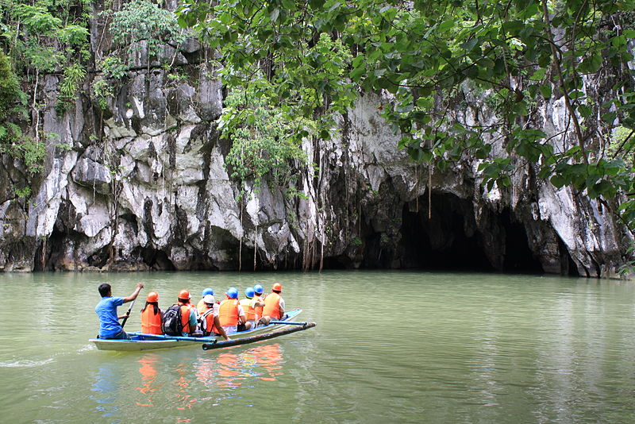
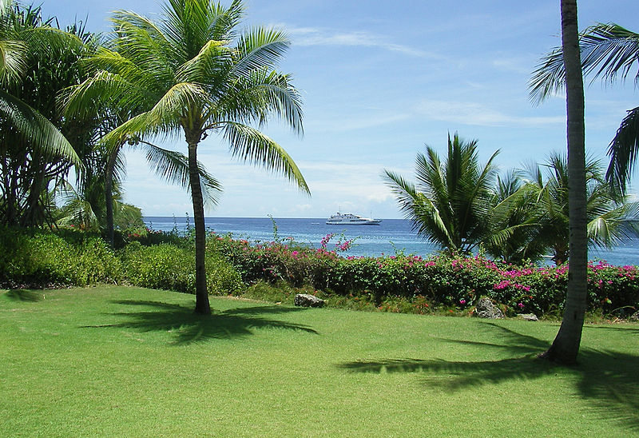

Philippines
Luzon
The Puerto Princesa Subterranean River National Park (a.k.a. St. Paul's Subterranean River National Park) is a protected area of thePhilippines located about 50 kilometers (30 mi) north of the city centreofPuertoPrincesa, Palawan. The river is called Puerto Princesa Underground River or St. Paul Underground River. The national park is located in the Saint Paul Mountain Range on the northern coast of the island. It is bordered by St. Paul Bay to the north and the Babuyan River to the east. The City Government of Puerto Princesa has managed the National Park since 1992. The entrance to the subterranean river is a short hike from the town Sabang.
Visayas

Macahambus Cave is a scenic cave in the Misamis Oriental province, near Cagayan de Oro, in the Philippines. The area of the cave is part of the tropical Macahambus Forest nature reserve. The cave, which houses a colony of bats, is a tourist attraction, and it is equipped with path and walkable scenic trails; one end of the cave leads to a veranda overlooking the Cagayan River. About 200 meters from the cave itself there is a doline, improperly referred to as the Macahambus Gorge. The place was the site of the Battle of Macahambus (4 June 1900), the first of the few battles won by the Filipinos during thePhilippine-American War.
Mindanao
Mactan is a densely populated island located a few kilometres from Cebu Island in the Philippines. The island is part of Cebu Province and it is divided into Lapu-Lapu City and the municipality of Cordova. The island is separated from Cebu by the Mactan Channel which is crossed by two bridges: theMarceloFernan Bridge and the Mactan-Mandaue Bridge. The island covers some 65 km2 (25 sq mi), and is home to currently some 430,000 people. making it the nation's most densely populated island. Along with Olango Island Group, the isles are administered as 2 cities covering 75.25 km2 (29.05 sq mi).